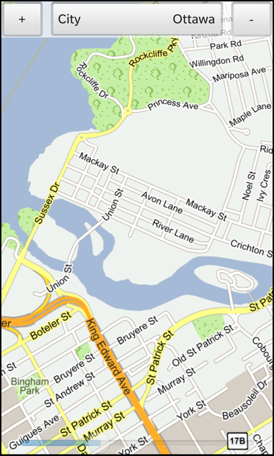

Files:
The Simple Map example allows the user to view the map of a city.

In this example we'll learn how to use the MapView class of the BB10 framework to show the map for a city that can be selected by the user from a DropDown. The map can be zoomed (via the pinch gesture, zoom buttons or a Slider) or scrolled (with the pan gesture).
The UI of this sample application consists of the MapView in the background, a control bar at the top of the window and a Slider at the bottom.
// The map view MapView { id: mapView horizontalAlignment: HorizontalAlignment.Fill verticalAlignment: VerticalAlignment.Fill // Use a decent height as initial value altitude: 2000 // Update the latitude/longitude automatically when user selects a different city latitude: cityDropDown.selectedValue.latitude longitude: cityDropDown.selectedValue.longitude tilt: 2 }
The MapView is configured to use an altitude of 2000 meter and its 'latitude' and 'longitude' properties are bound against the 'latitude' and 'longitude' properties of the currently selected city in the DropDown.
// The city selection drop down DropDown { id: cityDropDown title: qsTr("City") Option { text: qsTr("Ottawa") // Encode the coordinates as JSON object, which will be mapped to QVariantMap internally value: { "latitude": 45.42354, "longitude": -75.69797 } selected: true } Option { text: qsTr("Los Angeles") value: { "latitude": 34.05, "longitude": -118.25 } } Option { text: qsTr("Waterloo") value: { "latitude": 43.4652, "longitude": -80.5224 } } }
The DropDown has three Option entries, one for each city. As content for the 'value' properties we use a JSON object with the two fields 'latitude' and 'longitude', which is converted to a QVariantMap internally. This allows us to use the fields directly inside the MapView (see above).
// The 'Zoom in' button Button { text: qsTr("+") // Disable button if altitude is less than or equal to 500 meter enabled: mapView.altitude > 500 // Decrease the altitude on every click onClicked: mapView.altitude -= 500 }
The 'Zoom in' button is disabled if the altitude is lower than 500 meter. Clicking on the button will decrease the current altitude of the MapView by 500 meters.
// The 'Zoom out' button Button { text: qsTr("-") // Disable button if altitude is larger than or equal to 5000 meter enabled: mapView.altitude < 5000 // Increase the altitude on every click onClicked: mapView.altitude += 500 }
The 'Zoom out' button is disabled if an altitude of 5000 meter has been reached. Clicking on the button will increase the current altitude of the MapView by 500 meters.
// The altitude slider at the bottom Slider { horizontalAlignment: HorizontalAlignment.Center verticalAlignment: VerticalAlignment.Bottom opacity: 0.4 // Use the same range like for the zoom-in/zoom-out buttons fromValue: 500 toValue: 5000 // Keep slider in sync with current altitude value value: mapView.altitude onValueChanged: { // Change the altitude of the map view mapView.altitude = Math.floor(value) } }
The Slider at the bottom is also in the range of 500 to 5000 and its value is synchronized with the altitude of the MapView. If the user moves the slider handle, the altitude of the MapView is updated.